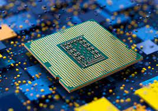

I want to talk about the different general components one needs and shoold be proficient in, and the different specific components.
I want to talk about how to make the most out of the information you get about a part so you can effectively use it as a 'black box'.
At Mozilla, we're a global community of
working together…
 More cool CPU Images